Brainshock S.A
En el año 2022, inicie una etapa administrativa en mi carrera profesional. El primer paso fue
introducir conocimientos y aptitudes en un proyecto puntual en Brainshock S.A. para el Ministerio de Trabajo,
Empleo y seguridad Social.
Coordinación de tutores en Programa Nacional Fomentar Empleo.
Docente para Proyectos en Programa Nacional Fomentar Empleo.
Ministerio de Trabajo, Empleo y Seguridad Social de la Nación. Articulación y comunicación con proveedores.
Presentación de balances.
Confección de planillas e informes; solicitud, recepción y envío de
documentaciones correspondientes.
Control de Campus
Articulación y comunicación fluida con alumnos para el proyecto Formate Sommeliers.
Transmisión por Meet de clases sincrónicas de la Carrera de Sommelier.
Realización, distribución y seguimiento de cronograma, horarios y aulas;
confección de planillas e informes; solicitud, recepción y envío de
documentaciones correspondientes. Actualmente trabajo en el proyecto del Instituto Madero, donde a partir de
2026 se brindará la Tecnicatura Superior en Ciencia de Datos e Inteligencia Artificial
Algunas de las Webs donde estuve trabajando:
Campus Virtual Brainshock,
Formate Sommeliers,
Campus Virtual Formate Sommeliers
Antiguo,
Campus Virtual Formate Sommeliers 2025.


 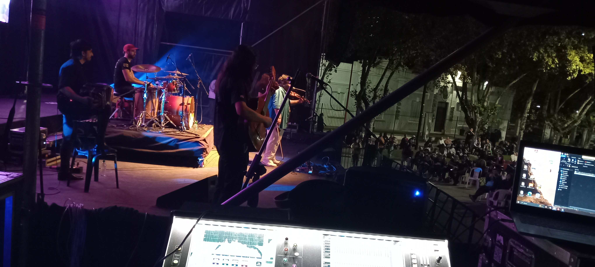
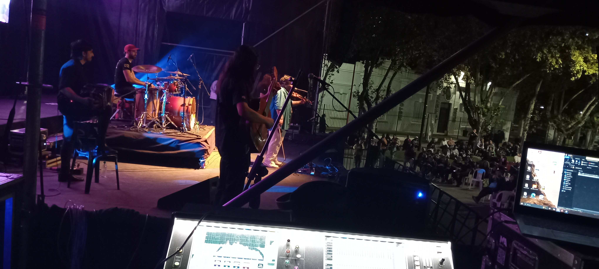


 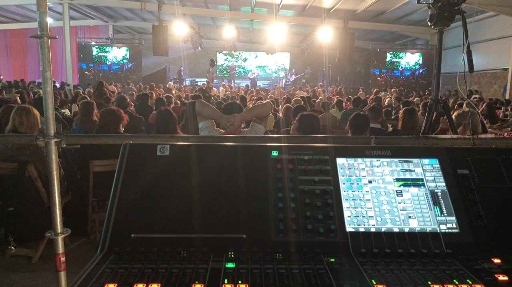
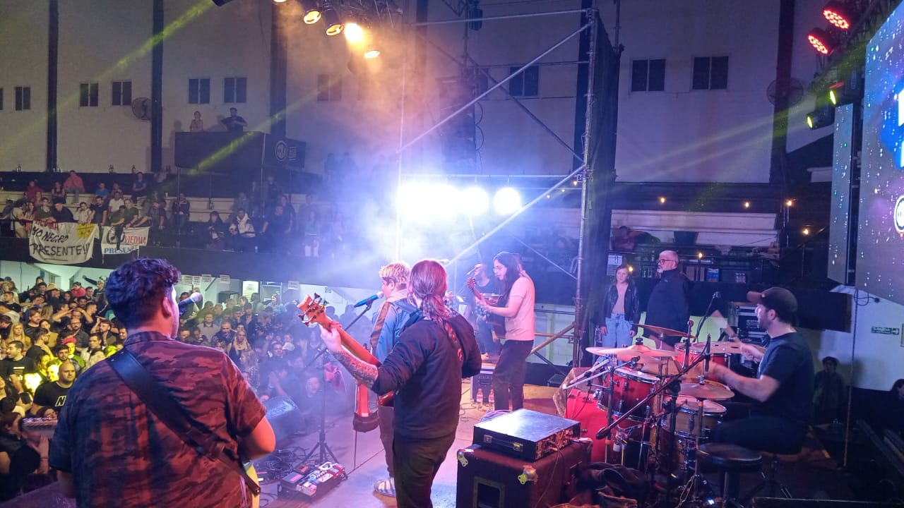
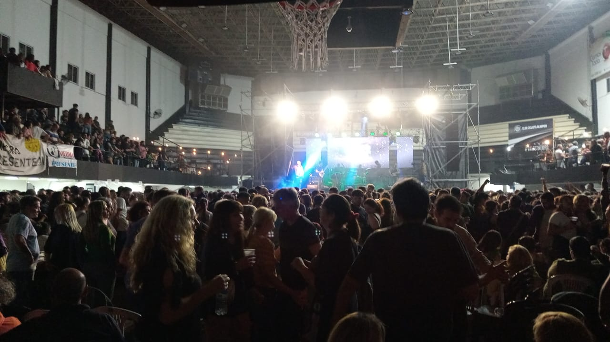
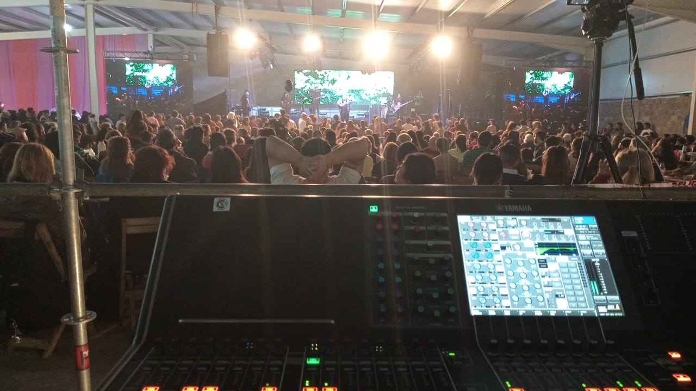
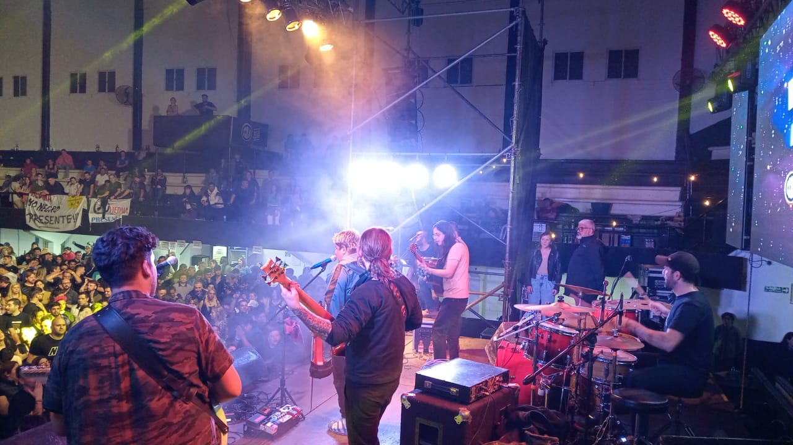
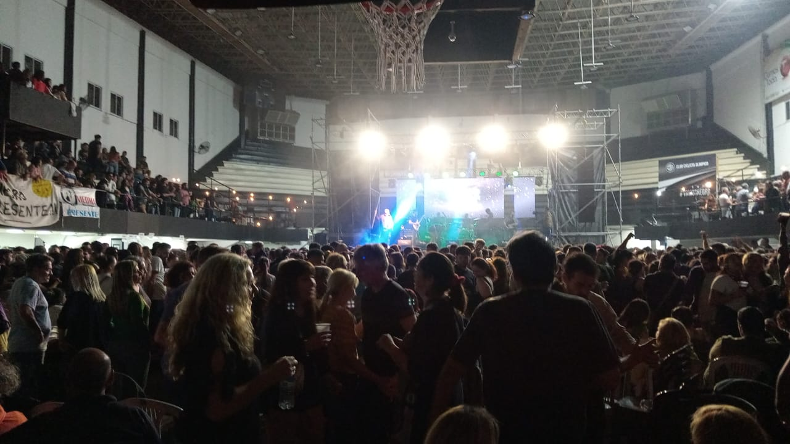
 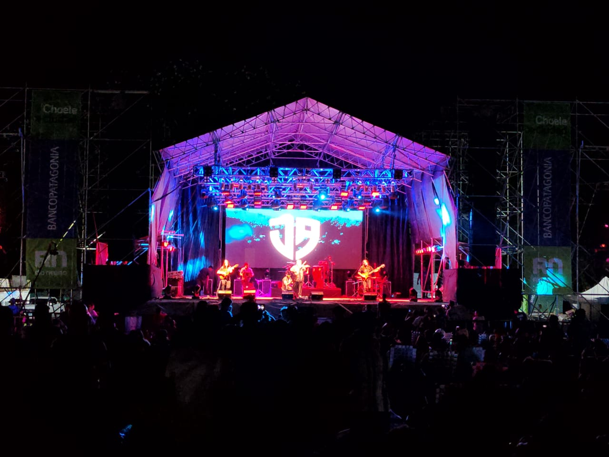
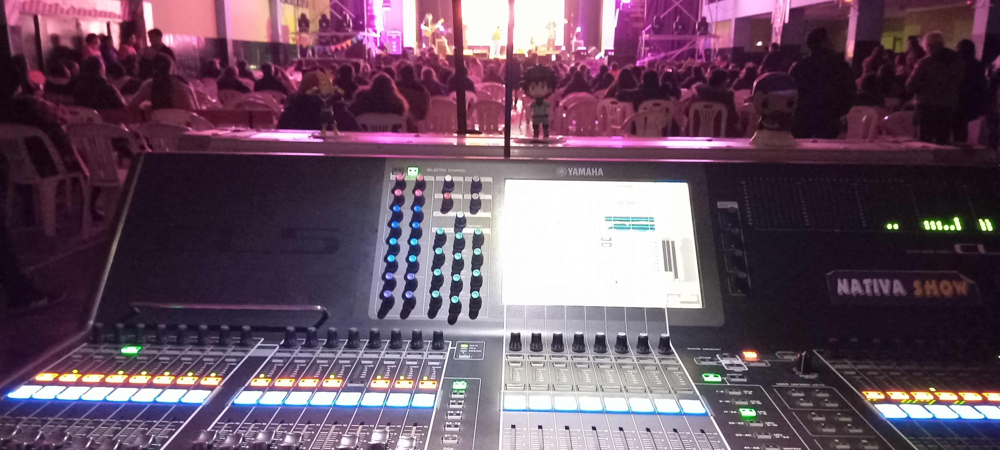
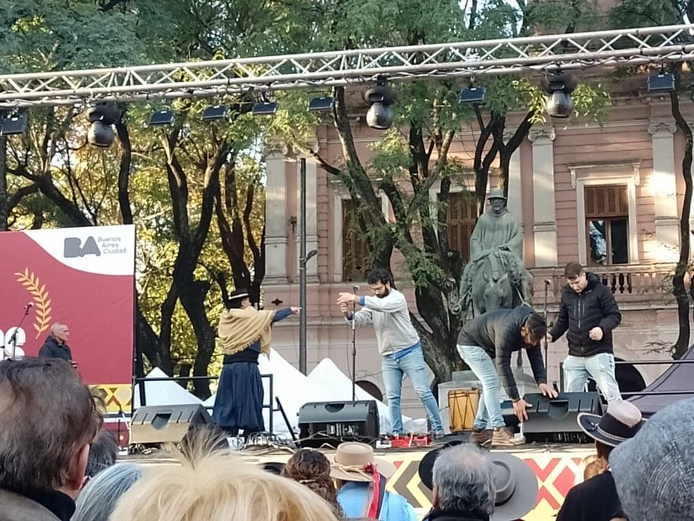
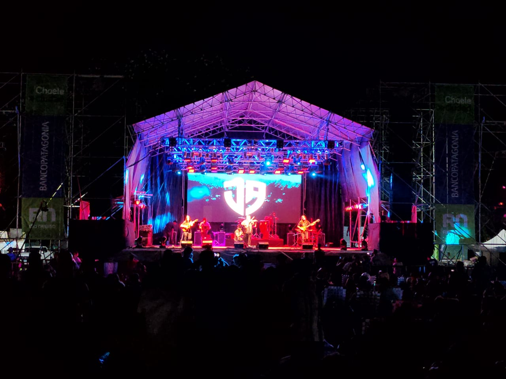
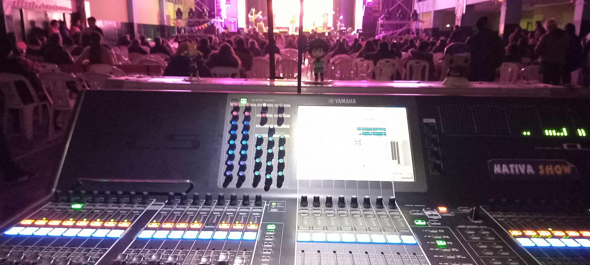
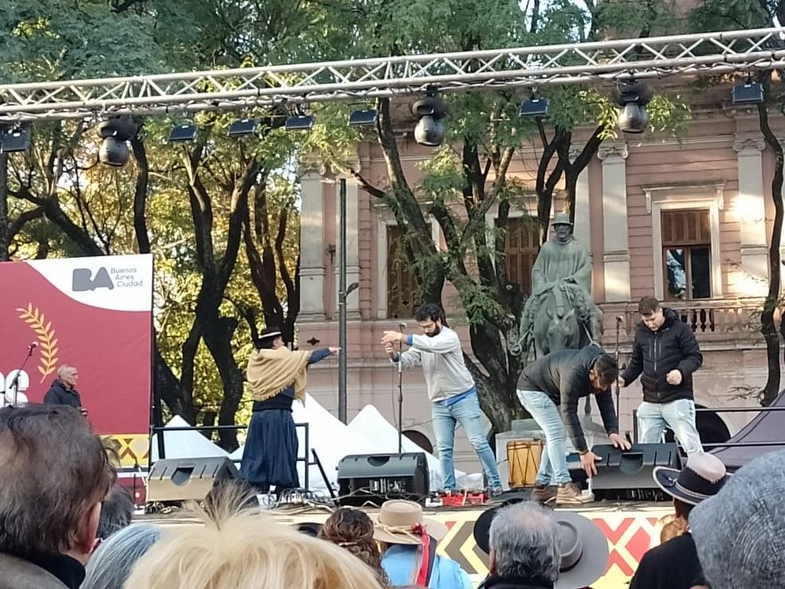